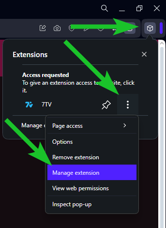

7TV extension compatibility
7TV is not compatible with NipahTV and will cause issues if both are enabled at the same time on Kick.
How to keep 7TV extension for other streaming plaforms?
If you want to keep using the 7TV extension for other streaming plaforms instead of disabling it completely, make sure the extension is not enabled on the Kick domain. To do this, follow the instructions below.
The permissions system of 7TV is a bit bugged, so please do follow all steps. First go to the 7TV extension browser settings by right clicking the extension and then clicking "Manage extension"
Here, go to "Site access" and uncheck "Automatically allow access on the following sites". If you want to use 7TV on Twitch, click the checkbox of "*://*.twitch.tv/*" again to make sure its checked.
Next right click the extension again and click "Options"

This will open up the installation wizard of 7TV where it asks you to choose the streaming plaforms to enable it for. Here, you can now select the plaforms you wish to enable it for.
That's all there is to it, enjoy!
EDIT: after testing it seems that the site access permissions in Chrome sometimes don't work correctly, so if you experience issues where 7TV keeps being loaded on Kick even though you disabled it, please do let us know!
The permissions system of 7TV is a bit bugged, so please do follow all steps. First go to the 7TV extension browser settings by right clicking the extension and then clicking "Manage extension"
Here, go to "Site access" and uncheck "Automatically allow access on the following sites". If you want to use 7TV on Twitch, click the checkbox of "*://*.twitch.tv/*" again to make sure its checked.
Next right click the extension again and click "Options"
This will open up the installation wizard of 7TV where it asks you to choose the streaming plaforms to enable it for. Here, you can now select the plaforms you wish to enable it for.
That's all there is to it, enjoy!
The permissions system of 7TV is a bit bugged, so please do follow all steps. First go to the 7TV extension browser settings by right clicking the extension and then clicking "Manage Extension"

Go to tab "Permissions"
Enable/disable the streaming platforms as you'd like. E.g. here I disable it only for just kick.com. The other options we leave as it is by default.
That's all there is to it, enjoy!
The permissions system of 7TV is a bit bugged, so please do follow all steps. First go to the 7TV extension browser settings by clicking "Manage extension"
Under "Site access" uncheck "Automatically allow access on the following sites". If you want to use 7TV on Twitch, click the checkbox of "*://*.twitch.tv/*" again to make sure its checked.
Scroll down and click on "Extension options"
This will open up the installation wizard of 7TV where it asks you to choose the streaming plaforms to enable it for. Here, you can now select the plaforms you wish to enable it for.
That's all there is to it, enjoy!
The permissions system of 7TV is a bit bugged, so please do follow all steps. First go to the 7TV extension browser settings by clicking "Manage extension"
Under "Site access" uncheck "Automatically allow access on the following sites". If you want to use 7TV on Twitch, click the checkbox of "*://*.twitch.tv/*" again to make sure its checked.
Scroll down and click on "Extension options"
This will open up the installation wizard of 7TV where it asks you to choose the streaming plaforms to enable it for. Here, you can now select the plaforms you wish to enable it for.
That's all there is to it, enjoy!